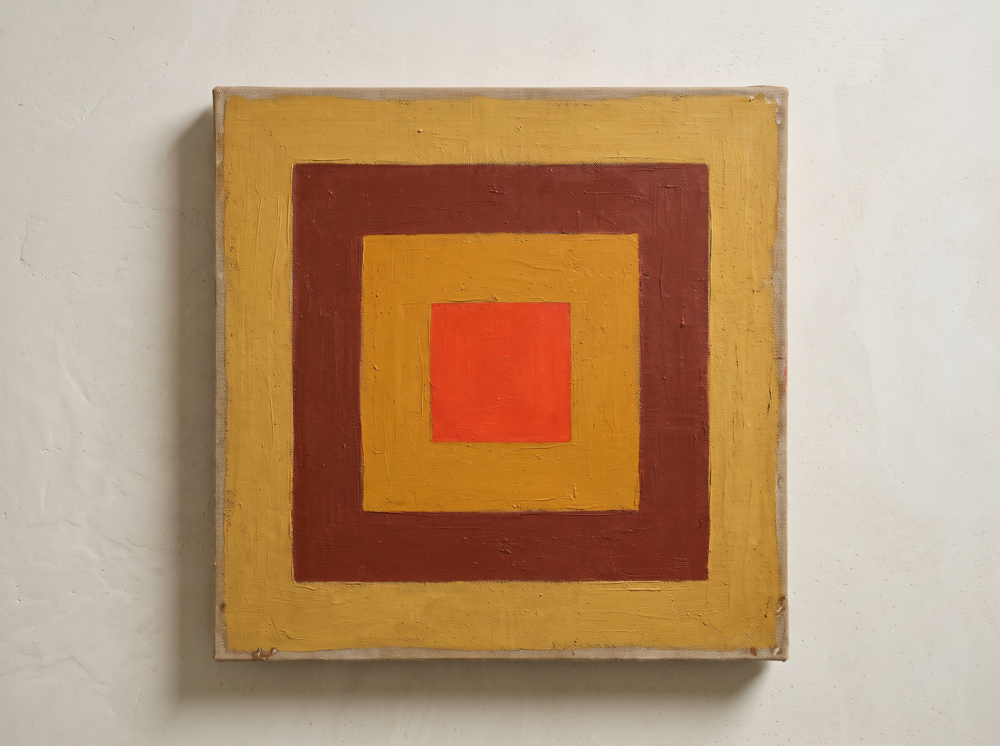
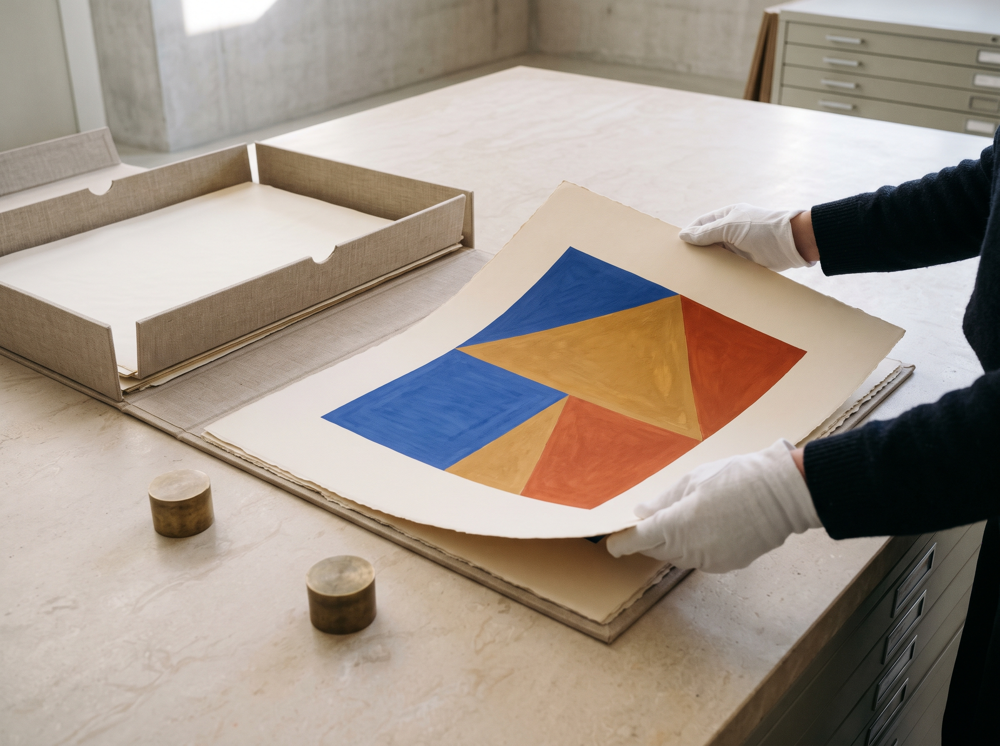
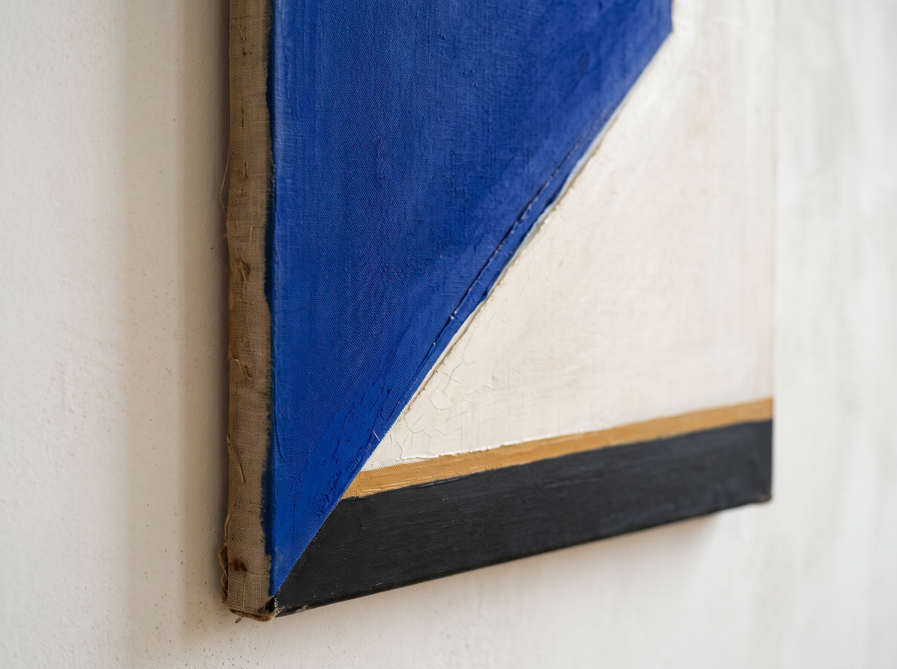
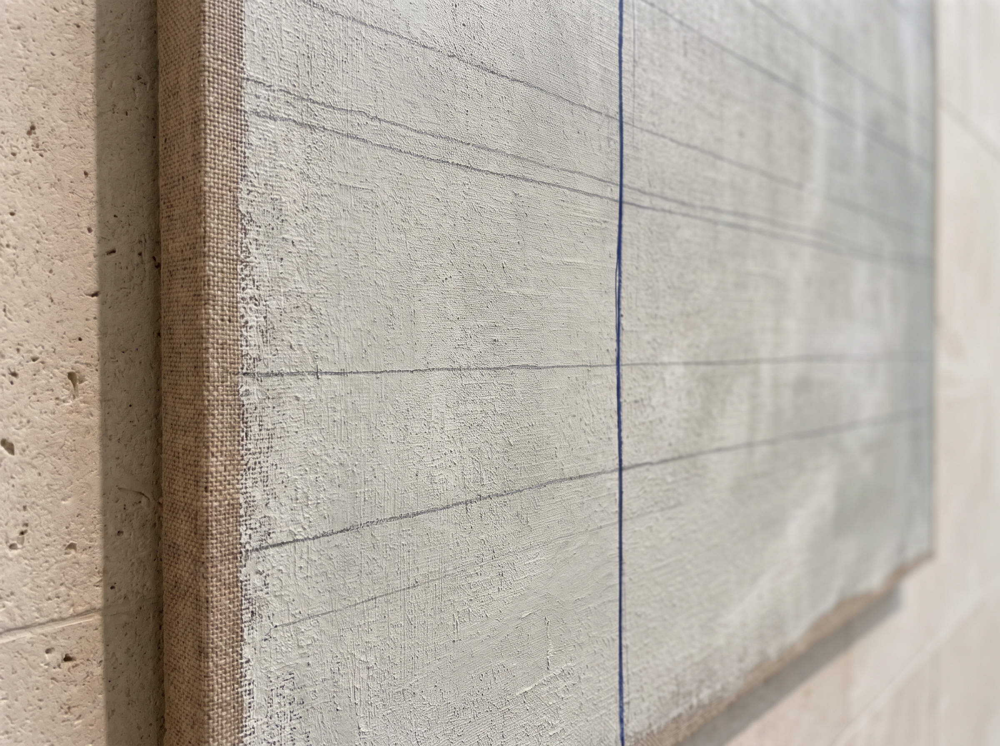

Folio Archive exhibition components
Public photography patterns, poster stages, and visitor ticketing components for museum exhibitions and bookshop editions. Each section states curatorial framing rules alongside interactive states rendered in light plaster and dark gallery tokens.
Conservation plates and archive photography
Frame loaned paintings and cabinet study sheets at natural studio luminance across both plaster and evening themes. Hold exact four-to-three slots during image loading and when private lenders withhold digital reproduction rights.
When to use
- Use uncropped conservation plates whenever documenting stretched paintings, raw linen works, or works on paper.
- Photograph unframed gouache and drawing studies on Jura limestone tables to show deckle edges and archival scale.
- Render locked-aspect plaster slots during network loading or whenever lender copyright restricts online images.
Composition and copy rules
- Keep physical canvas edges and stretcher wall shadows intact instead of cropping inside painted borders.
- Select installation views where visitors face inward toward the paintings rather than gazing off the viewport edge.
- Never dim, tint, or invert pigment photographs in dark mode; separate dark mounts with a faint inner ring.


Digital reproduction restricted by lender
On view in Gallery 5, Folio Kunsthalle Zürich, through 14 February. Full provenance appears on catalogue page 184.
Otto Meyer-Amden Estate, Notebook Study IV, 1958
Exhibition background-image poster
Anchor major seasonal exhibitions with full-bleed architectural room photography and a single timed-entry trigger. Switch to an editorial two-column split for single-canvas shows or activate the closing-week notice during final days.
When to use
- Use the sky-lit background poster when installation architecture and scale establish the exhibition mood immediately.
- Use the editorial two-column plate when a single painting holds primary authorship for a focused cabinet show.
- Switch to the closing-week state ten days before dismantling to surface late evening hours before bookings sell out.
Composition and copy rules
- Keep the lower shadow ramp tucked beneath the exhibition title so the skylight, travertine floor, and paintings stay bright.
- Always pair background URLs with an opaque dark ground color for reliable contrast and forced-colors safety.
- Stack the bone-white ticket button directly beneath the title on the left so it never covers gallery visitors or canvases.
Colour as Structure, 1954–1978
32 postwar works on linen · Folio Kunsthalle, Zürich · Through 14 February
CHF 24 adult · Free cancellation up to 24 hours ahead
Colour as Structure, 1954–1978
32 postwar paintings tracing how unmixed mineral pigment, raw linen margins, and ruled graphite intervals shape gallery space.
Folio Kunsthalle, Zürich · Limmatquai 82 · Open Tuesday to Sunday, 10:00–18:00
CHF 24 adult · Students CHF 16 · Under 18 free
Colour as Structure, 1954–1978
Last evening tours depart at 19:30 from Hall 3 · Loans return to Basel and Lausanne Monday
Remaining evening slots at CHF 24 · Annual passes admitted at the desk
Room showcase switcher
Sequence multi-room exhibitions with keyboard-accessible underline tabs instead of auto-advancing carousels. Visitors step between rooms at reading speed while artwork ratios and provenance rails stay steady.
When to use
- Use room tabs when a retrospective spans two to five distinct galleries or chronological periods.
- Avoid timed carousels, overlaid pagination pucks, and horizontal scroll traps that interrupt close pigment inspection.
Composition and copy rules
- Keep every room plate locked to a shared four-to-three container so switching rooms causes zero vertical shift.
- Open each wall note with one serif heading without stacking colored uppercase labels above it.
- Format artist name, date, medium, dimensions, and lender credit consistently beneath the tombstone rule.

Oblique mineral ultramarine planes
Gallery 4 pairs hand-ground French ultramarine wedges against aged lead-white oil grounds. Raking north skylight catches the palette-knife ridge where blue pigment meets raw folded canvas.
Marc-Antoine Delacroix (1929–2011), Oblique Measure II, 1969
Proportional ochre and vermilion bands
Gallery 3 brings together twelve square panels painted in Zurich and Ulm between 1958 and 1964. Each border width follows whole-number ratios measured from the exposed Belgian linen tacking edge.

Graphite plumb lines over wet chalk gesso
The final room collects nine pale reliefs scored directly with carpenter lead and taut cobalt thread before the chalk ground dried. Visitors follow surface elevation rather than colour contrast.
Critical excerpt and visitor hours
Balance one attributed newspaper review on the left against practical daily opening hours and transit directions on the right. Switch the visitor rail cleanly across daytime, Monday closure, and late-evening states.
When to use
- Place between gallery room views and ticket tariffs so visitors verify today's hours before choosing entry times.
- Drive the right rail from institutional calendar schedules covering regular days, conservation Mondays, and Thursday evenings.
Composition and copy rules
- Cite a single named critic, publication, and print date instead of anonymous adjectives or five-star icons.
- Spell out closed status and next opening hour in plain text rather than relying on red or green circles.
- Set opening hours and tram numbers in tabular lining figures for effortless vertical scanning.
“Hung beneath the Folio Kunsthalle skylights without vitrines, Vonderlan’s ochre ratios and Senn’s scored chalk reliefs breathe with rare architectural clarity.”
“Hung beneath the Folio Kunsthalle skylights without vitrines, Vonderlan’s ochre ratios and Senn’s scored chalk reliefs breathe with rare architectural clarity.”
“Hung beneath the Folio Kunsthalle skylights without vitrines, Vonderlan’s ochre ratios and Senn’s scored chalk reliefs breathe with rare architectural clarity.”
Admission ledger and annual pass
Present single-visit tariffs as ruled architectural rows beside a warm linen monograph card. Pair standard gallery tickets with an Individual and Dual annual pass switch for returning local visitors.
When to use
- Use ruled ledger lines for public museum admission instead of three software tier boxes with highlight badges.
- Add the linen bookshop card alongside tickets whenever visitors can reserve an exhibition catalogue for desk pickup.
Composition and copy rules
- Bind currency codes and amounts with a non-breaking space so CHF figures never split across two lines.
- State Dual pass savings in Swiss francs rather than promotional discount percentages.
- Set the exhibition monograph on warm raw linen so publication sales stay distinct from admission tariffs.
Annual Kunsthalle pass
Unlimited untimed entry for one named adult across all seasonal exhibitions · Pays back on visit 4.
Seasonal dispatch signup states
Offer quarterly exhibition announcements through one clearly labelled email field. Document every interactive state side by side so validation, busy spinner lock, and inline confirmation stay consistent.
When to use
- Place near the end of exhibition and monograph pages for visitors following upcoming seasonal openings.
- Ask only for an email address so readers subscribe without abandoning the exhibition catalogue.
Composition and copy rules
- Defer validation until blur or submit, explaining how to correct the address in plain words.
- Overlap the submit label and loading indicator inside one grid cell so button width never jumps.
- State annual email frequency directly below the field to answer inbox hesitation upfront.
Enter a complete email address with a domain suffix, such as name@domain.ch.
Four dispatches a year, one per exhibition season.
Saving subscription for seasonal curatorial letters…
Seasonal dispatch active for clara.senn@eth.ch
Our next curatorial letter mails on 12 March ahead of the spring works-on-paper retrospective, including Thursday preview invitations.